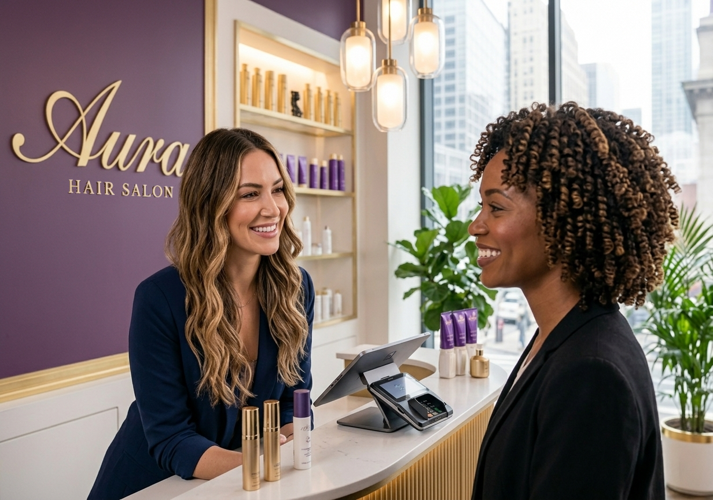

Chapter 02 — How It Works
Audio Never Passes Through Shared Hardware
A structural privacy guarantee. The customer's own phone is the microphone and earpiece — the kiosk never hears what is said.
Acoustic Isolation
No ambient noise in the session, and no disturbance to those nearby. The customer's phone mic is centimetres from their mouth, not metres.
Data Confidentiality
Banking, medical, or personal data is inaudible to bystanders. Critical for HIPAA, GDPR, and PCI-DSS compliance at the service point.
Multilingual Service
Automatic routing to the customer's chosen language. The advisor does not need to be bilingual; the ACD routes to the right queue.
Sign Language
Real-time interpreter for deaf customers, available on the same kiosk without any additional hardware or software.
Architecture: phone = mic + speaker · kiosk = screen only

Privacy by Architecture
The kiosk is a screen.
The customer's phone is the audio path.
The customer's phone is the audio path.